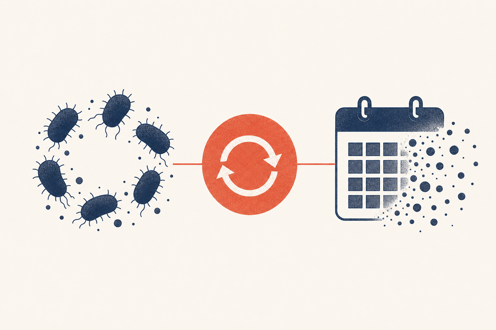

Key Takeaways
- Recurrent infection means four or more culture-confirmed episodes in a year, affecting 5 to 9 percent of women.[2]
- Recurrence usually reflects a host predisposition and relapse of the woman's own strain, not a single infection that was never cured.[14]
- Weekly fluconazole 150 mg for six months is the classic suppression and kept 90.8 percent of women disease-free versus 35.9 percent on placebo.[1]
- Oteseconazole (Vivjoa) reduced recurrence to roughly 5 percent through 48 weeks versus about 40 percent for placebo.[5]
- Monthly ibrexafungerp is a newer non-azole preventive option.[6]
- When suppression fails, test for non-albicans species such as C. glabrata and azole resistance, and consider boric acid or specialist referral.[9]

A yeast infection that clears and then comes back is one of the more frustrating problems in primary care, both for the people who have it and for the clinicians trying to stop it. The good news is that the evidence base has grown considerably, and there are now more options than ever, including two medicines approved specifically for this situation.
What Counts as Recurrent
Recurrent vulvovaginal candidiasis (RVVC) is usually defined as four or more episodes of symptomatic, confirmed yeast infection in a 12-month period. A finer distinction matters: true recurrent infection is not one stubborn infection that was never fully cleared; it is repeated new episodes from a person's own reservoir of Candida, usually the same strain returning again and again.[14]
Roughly 75 percent of women will have at least one episode in their lifetime, but only 5 to 9 percent cross into the recurrent range. A large systematic review estimated recurrent vulvovaginal candidiasis affects about 138 million women worldwide each year, making it one of the most common chronic vaginal conditions on the planet.[2][3]
Recurrent vs Uncomplicated Infection
| Feature | Uncomplicated VVC | Recurrent (RVVC) |
|---|---|---|
| Definition | Infrequent, mild to moderate | 4 or more episodes per year[2] |
| Prevalence | Up to 75 percent lifetime | 5 to 9 percent of women[3] |
| Approach | Short azole course | Induction then long-term suppression[1] |
| Culture before treating | Often unnecessary | Recommended to confirm species[11] |
Why Infections Recur
Recurrence is usually a property of the host rather than the bug. The same Candida albicans that lives harmlessly in most women relapses in a minority because of how their body responds. Well-documented contributors include:[10]
- Repeated antibiotic exposure, which repeatedly strips protective lactobacilli
- Diabetes, especially with poor glucose control, a classic driver of recurrent infection
- Hormonal factors, including high-estrogen contraceptives and the premenstrual estrogen rise
- Immune factors, from immunosuppression or, in many otherwise healthy women, a subtle but poorly understood local susceptibility
- Resistance or species shift, including fluconazole resistance and non-albicans species such as C. glabrata
The Relapse Mechanism
In most recurrent cases the organism is C. albicans that remains fully sensitive to fluconazole, which tells you the problem is not the drug failing but the host's tendency to let the fungus re-establish itself. After a course of treatment, the vagina repopulates, and in susceptible women the yeast out-competes the recovering lactobacilli again. This is why suppression, not repeated one-off treatment, is the effective strategy, and why the moment suppression stops, the relapse risk returns.[14][1]
A long-term follow-up study reinforced this: even after completing a successful suppressive course, a substantial proportion of women relapse, and long-term cure of the tendency remains difficult.[4]
Diagnosing Recurrent VVC
Before committing someone to months of suppression, the diagnosis should be confirmed on culture, and the species identified. This is not pedantry: several conditions mimic recurrent yeast, including recurrent bacterial vaginosis, allergic or irritant dermatitis, and lichen sclerosus, and they need entirely different management. Culture also reveals whether a non-albicans species is driving the relapses, which changes the treatment choice.[11][9]
Induction Then Suppression
The standard structure of treatment has two phases:[1]
- Induction: clear the current episode, classically with fluconazole 150 mg every 72 hours for three doses.
- Maintenance: ongoing suppression to prevent the next episode, classically weekly fluconazole 150 mg for six months.
Weekly Fluconazole: The Evidence
The landmark randomized trial by Sobel and colleagues (2004) randomly assigned 387 women with recurrent infection to six months of weekly fluconazole 150 mg or placebo, after induction. Women on fluconazole stayed disease-free at 6, 9, and 12 months at rates of 90.8 percent, 73.2 percent, and 42.9 percent, versus 35.9 percent, 27.8 percent, and 21.9 percent on placebo. Median time to the next episode was 10.2 months versus 4.0 months. No fluconazole resistance emerged, and the drug was discontinued in only one patient (for headache).[1]
The key nuance is visible in those numbers: the benefit is strong while on the drug and decays once it is stopped. Suppression controls the tendency; it does not cure it. For many women, repeating or extending suppression, or moving to a newer agent, is part of a long-term management conversation.[1]
Oteseconazole (Vivjoa)
Oteseconazole is a selective, long-acting oral azole approved in 2022 specifically for recurrent vulvovaginal candidiasis. In the paired VIOLET phase 3 trials, women with recurrent infection were given a short induction (two 150 mg doses a day, then weekly doses) after their acute episode cleared with fluconazole. Through 48 weeks, only 6.7 percent and 3.9 percent of oteseconazole-treated women had a recurrence in the two trials, versus 42.8 percent and 39.4 percent for placebo, a dramatic difference. Side effects were generally mild, with no drug-related serious events and no concerning liver or QT findings.[5]
Ibrexafungerp (Brexafemme)
Ibrexafungerp is the first oral non-azole antifungal, a triterpenoid that blocks glucan synthase, a target azoles do not touch. Because it is not an azole, it can treat some fluconazole-resistant strains, and cross-resistance is limited. For acute infection it is taken as two 150 mg doses 12 hours apart. For prevention, the 2025 CANDLE trial of monthly ibrexafungerp found 70.8 percent of treated women had no recurrence versus 58.5 percent on placebo, with the benefit sustained for months after the last dose.[6][7]
Boric Acid
Boric acid vaginal capsules (typically 600 mg inserted nightly for 14 days) are a long-standing tool for infection that resists azoles or relapses despite them, particularly for non-albicans species. A clinical review concluded boric acid achieves mycologic cure in a substantial share of women with azole-resistant or non-albicans infection, though it is reserved for these situations rather than used first-line.[8]
Non-albicans and Resistant Yeast
When a properly diagnosed infection fails standard treatment, think species and resistance. Candida glabrata, the most common non-albicans species, is frequently less susceptible to fluconazole, and acquired azole resistance in C. albicans is increasingly reported. Management shifts to culture-guided therapy, longer topical courses, boric acid, or the newer non-azole agents, sometimes with specialist input.[9]
Preventive Strategies Compared
| Strategy | Dosing | Key result vs placebo |
|---|---|---|
| Weekly fluconazole (6 months) | 150 mg once weekly | 90.8% disease-free at 6 months vs 35.9%[1] |
| Oteseconazole (Vivjoa) | Short induction then weekly | About 5% recurrence through 48 weeks vs about 40%[5] |
| Monthly ibrexafungerp | 300 mg monthly | 70.8% recurrence-free vs 58.5%[6] |
| Boric acid capsules | 600 mg nightly for 14 days | For azole-resistant or non-albicans infection[8] |
Lifestyle and Adjuncts
Beyond medication, a few changes can reduce the drivers of recurrence: control diabetes tightly, avoid unnecessary antibiotics, skip douching and scented products, and address modifiable hormonal exposures with your clinician.[10] The evidence for probiotics is limited and low-certainty; a Cochrane review found they may provide a modest benefit when added to antifungal therapy but cannot replace it.[13]
Looking for an Underlying Cause
| Driver | Check | Intervention |
|---|---|---|
| Diabetes | Fasting glucose, HbA1c | Tight glycemic control[10] |
| Non-albicans or resistant yeast | Culture with susceptibility | Boric acid, longer topical, or non-azole agent[9] |
| Antibiotic exposure | Medication history | Avoid unnecessary antibiotics[10] |
Red Flags
Seek care promptly if recurrent infection is accompanied by diabetes symptoms (excessive thirst or urination), if symptoms worsen despite treatment, or if discharge becomes malodorous, bloody, or associated with pelvic pain. These may indicate an uncontrolled underlying condition, a resistant organism, or a different diagnosis such as pelvic inflammatory disease.[10][9]
For the full diagnosis and first-line treatment framework, see the yeast infection guide, and for the antifungal used in suppression, the fluconazole guide.
Frequently Asked Questions
Recurrence usually reflects a personal predisposition, with common drivers including repeated antibiotic use, diabetes, hormonal factors, and sometimes a resistant or non-albicans Candida strain. It is typically relapse of your own yeast rather than a single infection that was never cured.[14]
The proven approach is induction to clear the current episode followed by long-term suppression, classically weekly fluconazole for six months, with newer options such as oteseconazole and monthly ibrexafungerp for those who relapse.[1]
Weekly fluconazole kept about 91 percent of women disease-free at six months, dropping to about 43 percent at 12 months (six months after stopping). The benefit lasts while taking the drug and decays afterward, so suppression is often repeated or extended.[1]
Oteseconazole is a newer, long-acting option designed specifically for recurrent infection. In its trials it cut recurrence to roughly 5 percent through 48 weeks versus about 40 percent for placebo, a strong result, and it offers an alternative for women who relapse on weekly fluconazole.[5]
Boric acid vaginal capsules (600 mg nightly for 14 days) can clear azole-resistant and non-albicans infections that keep relapsing, but it is reserved for those situations rather than used as first-line treatment.[8]
Candida glabrata is the most common non-albicans species causing vaginal infection, and it is frequently less susceptible to fluconazole. When your current infection is glabrata, treatment often shifts to boric acid, longer topical courses, or a non-azole agent.[9]
Yes, recurrent yeast infection is a recognized clue to undiagnosed or poorly controlled diabetes. Controlling blood glucose is one of the most effective interventions for reducing recurrence.[10]
No. Yeast infection is not sexually transmitted, and treating a partner does not reduce a woman's recurrence rate. The reservoir for recurrence is the individual's own Candida, not reinfection from a partner.[12]
References
- Sobel JD, Wiesenfeld HC, Martens M, et al. Maintenance fluconazole therapy for recurrent vulvovaginal candidiasis. N Engl J Med. 2004;351(9):876-883. doi:10.1056/NEJMoa033114
- Denning DW, Kneale M, Sobel JD, Rautemaa-Richardson R. Global burden of recurrent vulvovaginal candidiasis: a systematic review. Lancet Infect Dis. 2018;18(10):e339-e347. doi:10.1016/S1473-3099(18)30103-8
- Foxman B, Muraglia R, Dietz JP, Sobel JD. Prevalence of recurrent vulvovaginal candidiasis in 5 European countries and the United States: results from the first global systematic survey. J Low Genit Tract Dis. 2013;17(1):45-52. doi:10.1097/LGT.0b013e318273e8cf
- Crouss T, Sobel JD, Smith K, Nyirjesy P. Long-Term Outcomes of Women With Recurrent Vulvovaginal Candidiasis After a Course of Antifungal Therapy. J Low Genit Tract Dis. 2018;22(4):298-302. doi:10.1097/LGT.0000000000000413
- Sobel JD, Donders G, Degenhardt T, et al. Efficacy and Safety of Oteseconazole in Recurrent Vulvovaginal Candidiasis. NEJM Evid. 2022;1(8):EVIDoa2100055. doi:10.1056/EVIDoa2100055
- Goje O, Azie NE, Angulo DA, et al. A phase 3, multicenter, randomized, placebo-controlled trial of monthly oral ibrexafungerp for the prevention of recurrent vulvovaginal candidiasis (CANDLE). Am J Obstet Gynecol. 2025. doi:10.1016/j.ajog.2025.07.040
- Schwebke JR, Sobel R, Gersten JK, et al. Ibrexafungerp Versus Placebo for Vulvovaginal Candidiasis Treatment: A Phase 3, Randomized, Controlled Superiority Trial (VANISH 303). Clin Infect Dis. 2022;74(11):1979-1985. doi:10.1093/cid/ciab750
- Iavazzo C, Gkegkes ID, Zarkada IM, Falagas ME. Boric acid for recurrent vulvovaginal candidiasis: the clinical evidence. J Womens Health (Larchmt). 2011;20(8):1245-1255. doi:10.1089/jwh.2010.2708
- Akinosoglou K, Livieratos A, Asimos K, et al. Fluconazole-Resistant Vulvovaginal Candidosis: An Update on Current Management. Pharmaceutics. 2024;16(12):1555. doi:10.3390/pharmaceutics16121555
- Patel DA, Gillespie B, Sobel JD, et al. Risk factors for recurrent vulvovaginal candidiasis in women receiving maintenance antifungal therapy. Am J Obstet Gynecol. 2004;190(3):644-653. doi:10.1016/j.ajog.2003.11.027
- Pappas PG, Kauffman CA, Andes DR, et al. Clinical Practice Guideline for the Management of Candidiasis: 2016 Update by the Infectious Diseases Society of America. Clin Infect Dis. 2016;62(4):e1-e50. doi:10.1093/cid/civ933
- Workowski KA, Bachmann LH, Chan PA, et al. Sexually Transmitted Infections Treatment Guidelines, 2021. MMWR Recomm Rep. 2021;70(4):1-187. doi:10.15585/mmwr.rr7004a1
- Xie HY, Feng D, Wei DM, et al. Probiotics for vulvovaginal candidiasis in non-pregnant women. Cochrane Database Syst Rev. 2017;11(11):CD010496. doi:10.1002/14651858.CD010496.pub2
- Rautemaa-Richardson R, Sobel JD, Stone N, et al. State-of-the-Art Review: Managing Vulvovaginal Candidiasis. Clin Infect Dis. 2026. doi:10.1093/cid/ciaf673